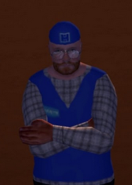

This page lists a few of my suggestions for playing the game. I hope they help you!
If you've damaged your car and don't want to spend money to fix it, close your game, go to your install folder and delete meshsave.txt. When reopening the game, your car will be intact. (This only fixes cosmetic damage and not components!)
Don't use MSCedit to give yourself money. This just ruins the whole point of the game.
Also, please don't try to play the lottery. If you win the grand prize, you'll ruin the experience, just like cheating yourself money. The whole point of the game is getting enough money from hard work to buy an upgrade for your car, so you can eventually participate in a rally and feel accomplished.
Teimo is closed on Sundays. Tough luck.
Also, Teimo restocks on Thursdays.
Don't forget to pay for your fuel.

Unless you need to hear Teimo's angry voice.
Keep lights always turned off unless night is coming. Daylight is plenty, and the electricity bill is expensive.
Turn off your sauna when you're not using it. Your house can catch fire.
Your fireplace, your stove and your TV can do the same.
Also, don't be dumb and set off fireworks near the house.
Unplug your phone at night unless you want to wake up at 3AM to the sound of a drunk needing a ride home.
Also, don't mess with the drunk's money, unless you want to see someone hanging around near a bridge for a very long time.
Beer and sausages are the most cost-efficient food items.
Instead of smoking, chop wood to decrease stress. It's more efficient, as you are also working and not spending money on cigarettes, which also increase your stress rate.
If you have absolutely nothing to decrease stress, spam N to swear. Swearing reduces stress very slowly, but it's better than showing up as a death in the local newspaper.
Finally, don't run people over. Jail is extremely long and boring, and you also can't break out.
Special thanks
to my colleagues, Stefan, Radu, Cosmin, and Vlad, who helped me with ideas, as well as to our teacher.